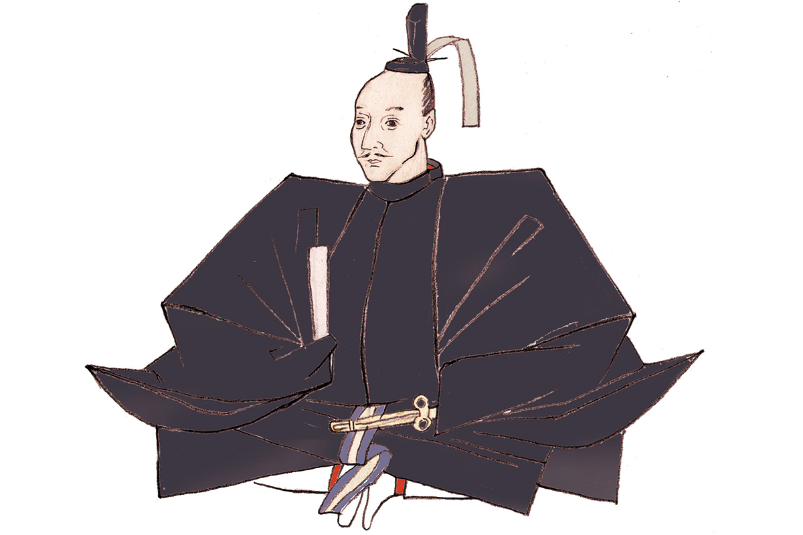
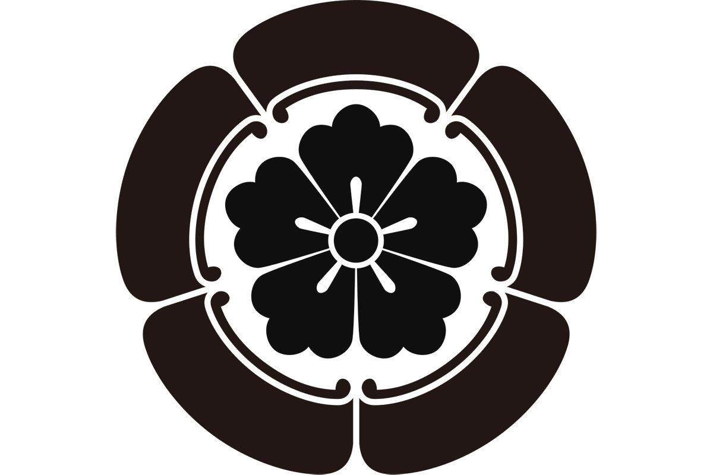

Префектура Айти · Овари · история
Нобунага Ода: бунтарь из Овари, который начал объединение Японии

С конца XV до конца XVI века Япония жила в войнах: сёгунат Муромати потерял власть, и по всей стране поднялись удельные князья. Самым дерзким из них был Нобунага Ода, уроженец Овари, который первым начал объединять страну под одной властью.
Портрет
Человек, опередивший время
Нобунага Ода (1534–1582) родился в провинции Овари, на западе нынешней префектуры Айти, в роду Ода. В детстве его звали Киппоси, а повзрослев, он принял имя Кадзуса-но сукэ Нобунага. Главной женой его стала Китё, известная также как Нохимэ, дочь соседнего князя; среди других жён были Кицуно Икома и госпожа Набэ.
Нобунагу без преувеличения называют одним из величайших героев японской истории. Его считают вспыльчивым и жёстким: он шёл на столкновение со старыми силами и даже сжёг монастыри на горе Хиэй под Киото. Но он видел дальше своих современников и изменил не только способ вести войну, но и культуру, и экономику страны.
Нобунага любил всё новое и охотно перенимал «южную варварскую» культуру, то есть то, что привозили в Японию португальцы и испанцы. Прежде всего это были огнестрельные ружья. Нобунага одним из первых сделал ставку на мушкеты и тем перевернул войну, в которой до того главную роль играла конница.

Своей опорой в борьбе за страну он сделал замок Адзути на берегу озера Бива, в нынешней префектуре Сига. Это была огромная крепость с высокой главной башней, и, по преданию, в ней были даже покои для приёма императора. Нобунага объявил свободные рынки и отменил торговые гильдии, чтобы торговать мог любой, и город у подножия замка, как говорят, процветал.
Казалось, власть над страной уже у него в руках. Но в 1582 году его вассал Мицухидэ Акэти (?–1582) поднял мятеж и напал на господина в храме Хонно-дзи в Киото. Нобунага покончил с собой. Ему было 49 лет.
Мысль
В любую эпоху мир меняют чудаки
В любую эпоху мир меняют чудаки, а полководцу нужна широта души, чтобы принимать тех, кто не похож на других. Нобунага сам был чудаком, и его щедрость к людям видна уже в том, сколько талантов вышло из числа его вассалов. Первым среди них был Хидэёси Тоётоми (1537–1598): простой солдат на службе у Нобунаги, он позже стал правителем всей Японии.
Хроника
Жизнь в датах
- 1534 Нобунага рождается в провинции Овари.
- 1546 В замке Фуруватари проходит обряд совершеннолетия, и юноша принимает имя Кадзуса-но сукэ Нобунага.
- 1548 Политический брак с Китё (Нохимэ), дочерью Досана Сайто (1494–1556), правителя соседней провинции Мино.
- Около 1551 Нобунага становится главой рода и начинает объединять Овари.
- 1555 Ставка переезжает в замок Киёсу.
- 1559 С отрядом примерно в сто человек Нобунага едет в столицу и получает аудиенцию у 13-го сёгуна Муромати Ёситэру Асикаги (1536–1565).
- 1560 Победа над Ёсимото Имагавой (1519–1560) в битве при Окэхадзаме.
- 1567 Нобунага начинает ставить печать с девизом «Тэнка фубу», «Власть над Поднебесной силой оружия». Видимо, с этого времени он всерьёз задумал объединить страну.
- 1568 Нобунага поддерживает Ёсиаки Асикагу (1537–1597), наследника главной линии сёгунов, и ведёт войско в Киото.
- 1570 Вместе с войском Токугавы он разбивает союз родов Асаи и Асакура у реки Анэ в провинции Оми (битва при Анэгаве).
- 1573 Ёсиаки Асикага изгнан из Киото.
- 1575 Победа в битве при Нагасино.
- 1576 Начинается строительство замка Адзути.
- 1582 Гибель в храме Хонно-дзи.
Где увидеть
Места Нобунаги в Айти
Молодость Нобунаги прошла в Овари, и самые важные битвы первой половины его жизни случились на землях нынешней префектуры Айти. Где именно он родился, спорят: по одной версии, в замке Сёбата к западу от Нагои, по другой, в старом замке Нагоя, на месте которого позже построили нынешний. От замка Фуруватари в Нагое, где он стал взрослым, остался лишь памятный камень. О замке Киёсу, его ставке с 1555 года, мы рассказываем отдельно: Замок Киёсу.
Гора Комаки: первый замок, построенный Нобунагой
В 1563 году Нобунага перенёс ставку из Киёсу на гору Комаки, к северу от Нагои, и впервые построил замок сам. Здесь он прожил четыре года, пока не перебрался в Гифу. Раскопки, которые шли около двадцати лет, показали, что вершину опоясывали две-три линии каменных стен, а у подножия был распланирован город. В башне на вершине работает исторический музей, а у подножия информационный центр «Рэкисиру Комаки» с макетами и фильмами о замке. Весной здесь цветут около 400 деревьев сакуры.
Замок Комакияма (исторический музей и «Рэкисиру Комаки»)
- Адрес
- префектура Айти, Комаки, Хориноути, 1-1 (музей), 1-2 («Рэкисиру Комаки»)
- Телефон
- +81 568-72-0712 (музей), +81 568-48-4646 («Рэкисиру Комаки»)
- Часы работы
- музей 9:00–16:30, «Рэкисиру Комаки» 9:00–17:00
- Выходные
- третий четверг месяца (если это праздник, то следующий будний день), с 29 декабря по 3 января
- Цены / Вход
- 200 иен, до 18 лет бесплатно; один билет действует в обоих зданиях
- Сайт
- komaki-kanko.jp
Святилище Ацута: стена Нобунаги
Перед битвой при Окэхадзаме в 1560 году Нобунага молился о победе в святилище Ацута в Нагое. Победив, он в благодарность поднёс святилищу глинобитную стену. «Стену Нобунаги» сложили из глины и извести, замешанных на масле, и уложили слоями черепицы. Её считают одной из трёх великих глинобитных стен Японии.
Святилище Ацута
- Адрес
- префектура Айти, Нагоя, район Ацута, Дзингу, 1-1-1
Окэхадзама: поле первой великой победы
Битва при Окэхадзаме принесла Нобунаге славу: здесь погиб Ёсимото Имагава, один из сильнейших князей того времени. Где именно всё произошло, точно не известно, и на звание поля битвы претендуют два места. В городе Тоёакэ с 1937 года охраняется государственный исторический памятник «Предполагаемое поле битвы при Окэхадзаме» с камнем, поставленным в 1809 году. В соседнем районе Мидори города Нагоя в 2010 году, к 450-летию битвы, открыли парк Окэхадзама, где показывают место, которое считают местом гибели Ёсимото.
Предполагаемое поле битвы при Окэхадзаме
- Адрес
- префектура Айти, Тоёакэ, Сакаэмати, Минамидатэ, 11
- Как добраться
- 3–5 минут пешком от станции Тюкё-Кэйбадзё-маэ линии Мэйтэцу Нагоя
Парк Окэхадзама
- Адрес
- префектура Айти, Нагоя, район Мидори, Окэхадзама-Кита, 3
- Сайт
- okehazama.net
Ситарагахара: битва при Нагасино
В 1575 году войска Нобунаги и Иэясу Токугавы (1543–1616) разбили армию рода Такэда у замка Нагасино, на востоке нынешней префектуры Айти. Решающее сражение шло на равнине Ситарагахара, и именно здесь, по общему мнению, мушкеты Нобунаги показали свою силу. На месте битвы в городе Синсиро стоит исторический музей Ситарагахары с документами о сражении и большой коллекцией фитильных ружей.
Исторический музей Ситарагахары
- Адрес
- префектура Айти, Синсиро, Такэхиро, Сингэмбара, 552
- Телефон
- +81 536-22-0673
- Часы работы
- 9:00–17:00
- Выходные
- вторник (если это праздник, то следующий будний день), с 29 декабря по 3 января
- Цены / Вход
- 330 иен, школьники 100 иен
Замок Адзути в префектуре Сига и храм Хонно-дзи в Киото, места взлёта и гибели Нобунаги, лежат уже за пределами Айти.
Фото: Мария Араи (иллюстрация).